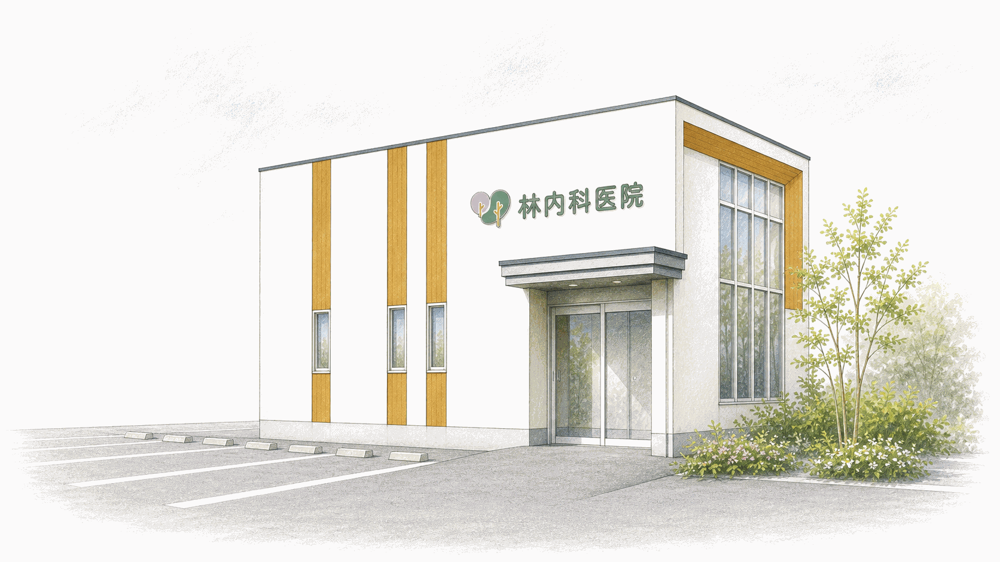

石川県小松市下牧町の内科
林内科医院
体調の不安を、気軽に相談できる場所。
発熱などの急な体調不良から生活習慣病、循環器・消化器の症状、胃カメラ・大腸カメラまで、分かりやすく丁寧に診療します。
- 所在地
- 石川県小松市下牧町ホ102-1

駐車場 13台医院前をご利用ください
NEWS
お知らせ
現在、新しいお知らせはありません。
本日の診療
診療時間は下記の表をご確認ください
休診：木曜・日曜・祝日
診療時間
| 診療時間 | 月 | 火 | 水 | 木 | 金 | 土 | 日祝 |
|---|---|---|---|---|---|---|---|
| 9:00–12:00 | 診療 | 診療 | 診療 | 休診 | 診療 | 診療 | 休診 |
| 13:30–18:30 | 診療 | 診療 | 診療 | 休診 | 診療 | 診療 | 休診 |
休診：木曜・日曜・祝日
診療カレンダー
今月の診療日
診療日
休診
特別休診
休診予定は変更になる場合があります。
ACCESS
アクセス
- 所在地
- 石川県小松市下牧町ホ102-1
- 駐車場
- 13台
医院前をご利用ください - 小松空港から
- 車で約3分（約1.9km）
- 小松駅から
- 車で約8分（約3.8km）
- 小松ICから
- 車で約5分（約3.0km）
※所要時間は通常時の目安です。道路状況により異なります。
FAQ
よくある質問
受診前に確認されることが多い内容をまとめました。判断に迷う場合は、診療時間内にお電話でお問い合わせください。
初診はどのように受診すればよいですか？
通常診療は事前のお申し込み不要です。受付時間内に直接ご来院ください。ワクチンと健康診断は準備が必要なため、事前にお電話ください。
発熱や咳、のどの痛みがある場合はどうすればよいですか？
来院前にお電話ください。感染対策のため、一般診療とは別の時間・場所をご案内する場合があります。
胃カメラ・大腸カメラは受けられますか？
上部内視鏡検査と下部内視鏡検査に対応しています。検査の必要性、前処置、鎮静薬の使用可否は診察時にご説明します。
健康診断や予防接種はできますか？
特定健康診査、後期高齢者健康診査、雇入時・定期健康診断、大腸がん検診（便潜血検査）に対応しています。また、子宮頸がん予防（HPV）、二種混合（DT）、日本脳炎などの小児用ワクチンも事前の電話相談により対応します。種類・対象年齢・在庫状況によってはご用意できない場合があります。
駐車場はありますか？
医院前に13台分の駐車場があります。小松空港、小松駅、小松IC方面からお車で来院しやすい立地です。
CONTACT
受診についてご不安なことは、
お電話でご相談ください。
電話でのお問い合わせ0761-24-6288
電話受付：診療時間内
発熱症状のある方は来院前にご連絡ください。